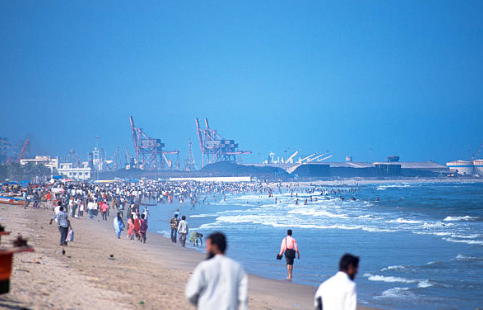

|

|
- Marina Beach: A Picturesque Coastal Landmark
Marina Beach, located in the heart of Chennai, Tamil Nadu, is one of the longest urban beaches in the world, stretching over 13 kilometers along the Bay of Bengal. It is a popular destination for both locals and tourists, offering a tranquil escape from the hustle and bustle of city life. The beach is renowned for its golden sands, picturesque views, and vibrant atmosphere, making it a beloved spot for early morning walks, evening strolls, and family outings. With a wide promenade, numerous food stalls, and recreational activities, Marina Beach provides a perfect blend of natural beauty and urban conveniences.
- Cultural and Historical Significance
In addition to its natural beauty, Marina Beach holds cultural and historical significance. The beach is home to several important landmarks, including the MGR Memorial and the Anna Memorial, which honor two of Tamil Nadu's most beloved leaders, M. G. Ramachandran and C. N. Annadurai. The iconic light house at the northern end of the beach offers panoramic views of the coastline and the city, adding to the charm of the area. Historically, Marina Beach has also been a witness to significant events, such as political protests, public celebrations, and traditional rituals, making it an integral part of Chennai social fabric.
- Marine Life and Conservation Efforts
Marina Beach is not only a tourist attraction but also an important site for marine life, particularly for sea turtles. The beach serves as a nesting ground for the endangered Olive Ridley sea turtles, and efforts have been made by local organizations to protect these creatures. While the beach faces challenges from urbanization, pollution, and coastal erosion, conservation efforts are being implemented to preserve its natural ecosystem. Awareness campaigns, cleanup drives, and collaborations with environmental groups aim to maintain the ecological balance of the beach while ensuring its sustainability as a public space for recreation and wildlife conservation.
|